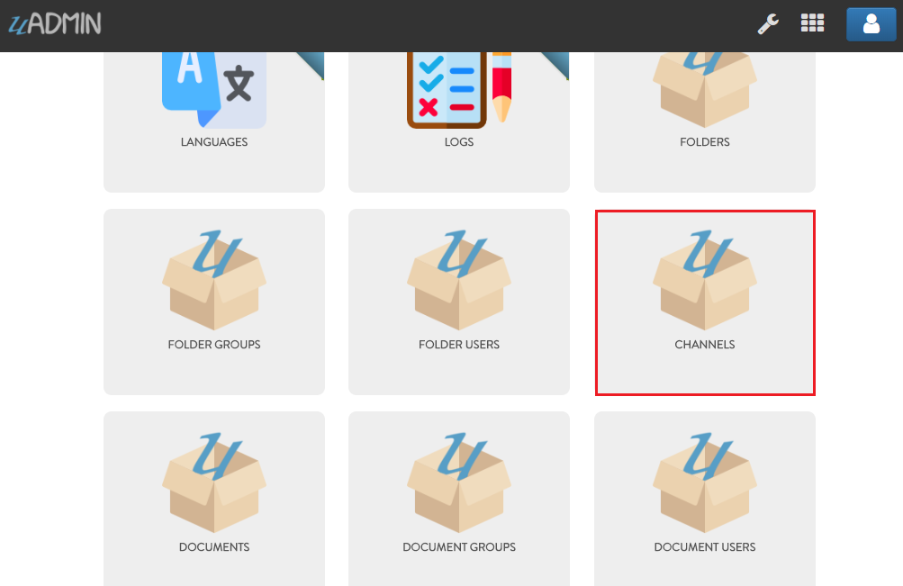
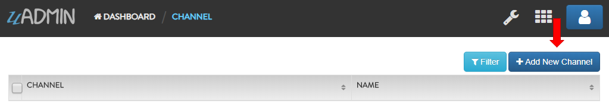
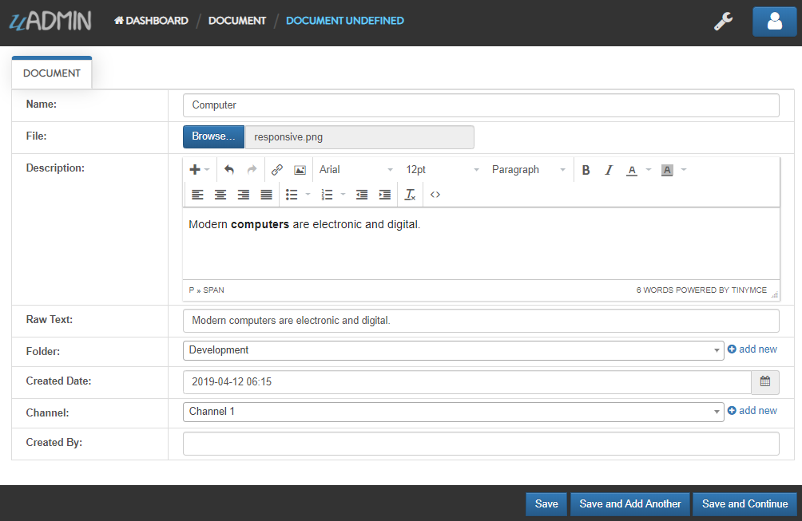
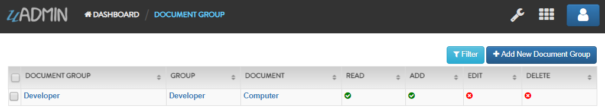
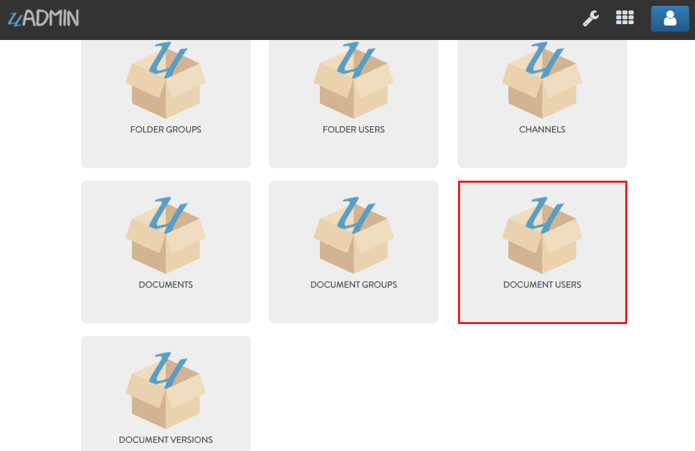
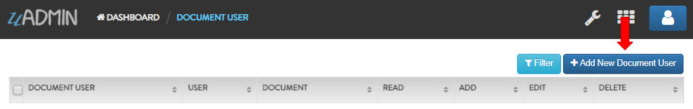
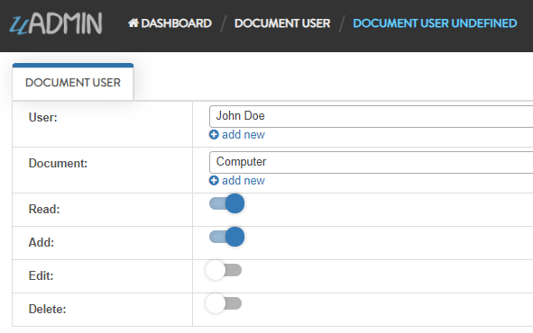
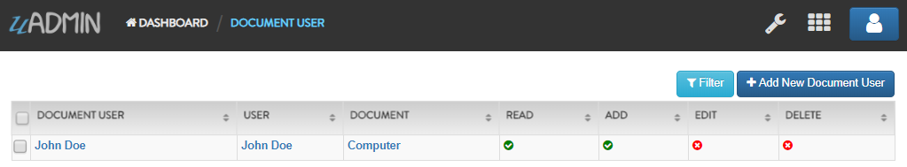
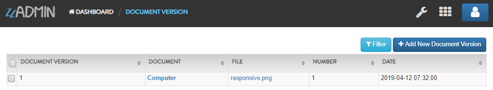

Document System Tutorial Part 6 - Creating Records in Documents¶
In this part, we will discuss about document concepts and how to create records in an application.
First of all, click “CHANNELS”.
Click “Add New Channel”.
Input the channel name anything you want (e.g. Channel 1).

Result

Now go back to the Document System Dashboard then click “DOCUMENTS”.

Click “Add New Document”.

Input the following information except the CreatedBy field. This field will be automatically generated after you save the record that returns the full name of the logined user.
Result

Go back to the Document System Dashboard then click “DOCUMENT GROUPS”.

Click “Add New Document Group”.

Fill up the following information to create a new document group. In this example, let’s give access to read and add in the Developer group.

Result
Go back to the Document System Dashboard then click “DOCUMENT USERS”.
Click “Add New Document User”.
Fill up the following information to create a new document user. In this example, let’s give access to read and add in this document.
Result
Go back to the Document System Dashboard then click “DOCUMENT VERSIONS”.

Click “Add New Document Version”.

Fill up the following information to create a new document version.

Result
In the next part, we will talk about register inlines that connects from a parent model to another model.